中文
中文更新板载调试器（固件）
更新历史
| 日期 | 版本 | 作者 | 更新内容 |
|---|---|---|---|
| 2025-04-21 | v0.91 | Serika |
|
| 2025-03-11 | v0.9 | Serika |
|
| 2025-02-18 | v0.8 | Serika |
|
概述
所有 Sipeed Tang 系列均有板载调试器（独立的 SOM 除外）。调试器是具有自己固件的独立 MCU。用户可以自行更新这些调试器的固件以获取功能更新和错误修复。
我们需要使用 BouffaloLabDevCube 对这些板载调试器主控进行编程，有关 博流MCU 的 *芯片 & 工具* 的文档可以在此处找到 【点我跳转】。
这里有一个简略的步骤说明：
- 首先，根据您所使用的操作系统，选择下载并安装相应版本的更新工具，如BouffaloLabDevCube；
- 从 Sipeed 下载站 获取适用于您主板的更新调试器固件，请注意区分您的开发板的型号；
- 请参阅 博流智能官方网站 上相应的官方文档来更新板载调试器的固件；
- 对于 Windows 用户，下方有详细的分步骤教程。其他操作系统的用户请参考 Windows 的步骤并根据实际情况相应变通。
教程
硬件准备
要将板载调试器置于 DFU 模式，请在打开电路板电源或使用电缆连接电路板的调试 USB 端口之前按下 *更新按钮* 或短接相应的 *测试点*。
请参阅下文了解相应的 *更新按钮* 和 *测试点*。
Tang nano 系列
Tang nano 1K
2 个
测试点位于PCB的 TOP 面的左上角，按键KEY-B后面。CSS Indentation 点击此处查看nano 1K的下载器测试点的位置
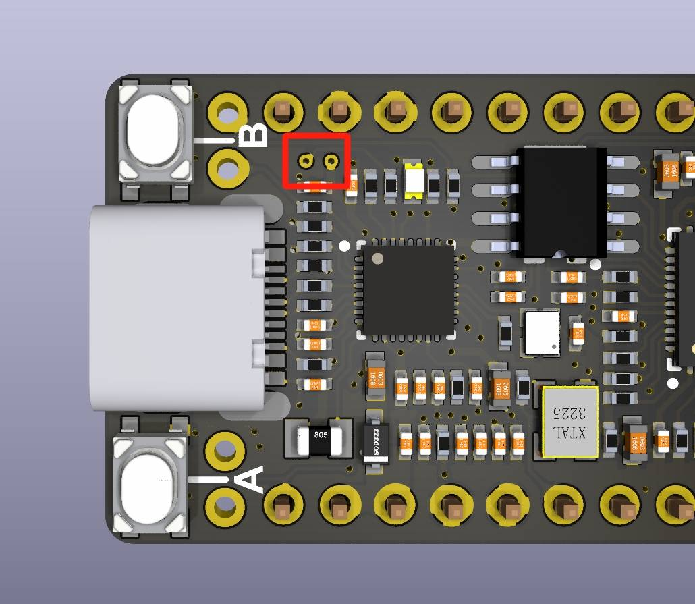
Tang nano 4K
2 个
测试点位于PCB的 TOP 面的左上角，USB-C连接器后面。CSS Indentation 点击此处查看nano 4K的下载器测试点的位置
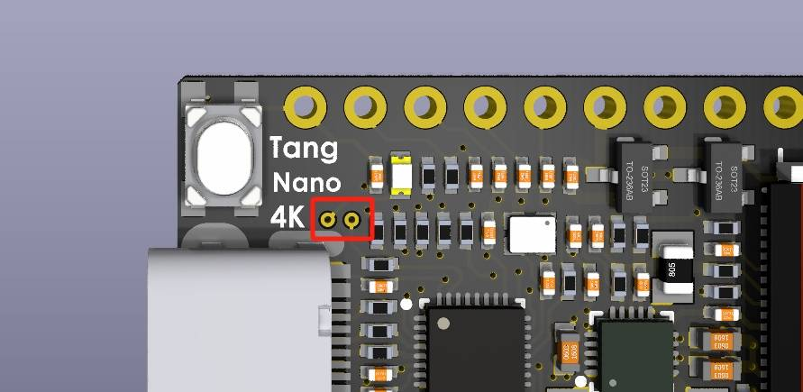
Tang nano 9K
2 个
测试点位于PCB的 TOP 面的中间左侧，USB-C连接器后面。CSS Indentation 点击此处查看nano 9K的下载器测试点的位置
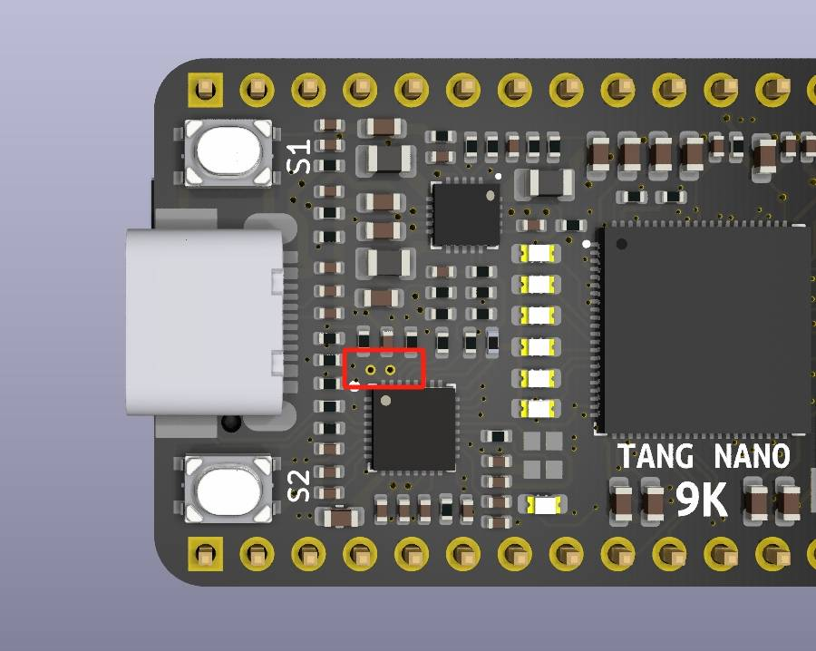
Tang nano 20K
更新按钮位于PCB的 TOP 面的 HDMI 连接器后面的，旁边有丝印UPDATE。CSS Indentation 点击此处查看nano 20K的下载器测更新按钮的位置
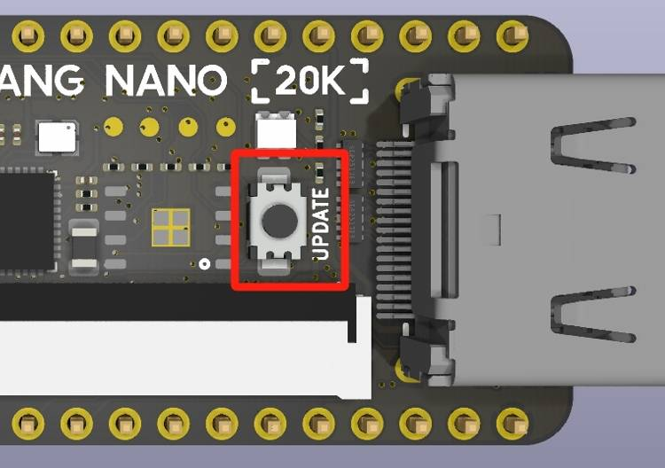
Tang Primer 系列
Tang Primer 20K Dock
更新按钮位于PCB的 TOP 面的 HDMI 连接器后面的，旁边有丝印UPDATE。CSS Indentation 点击此处查看Primer 20K Dock的下载器测更新按钮的位置
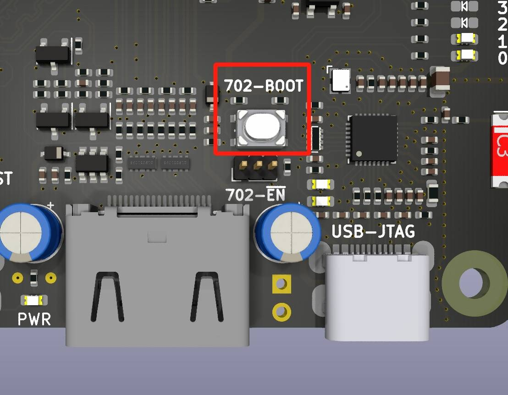
Tang Primer 25K Dock
2 个
测试点位于PCB的 BOT 面的左上角，丝印标记为3V3和TDO。CSS Indentation 点击此处查看Primer 25K Dock的下载器测试点的位置
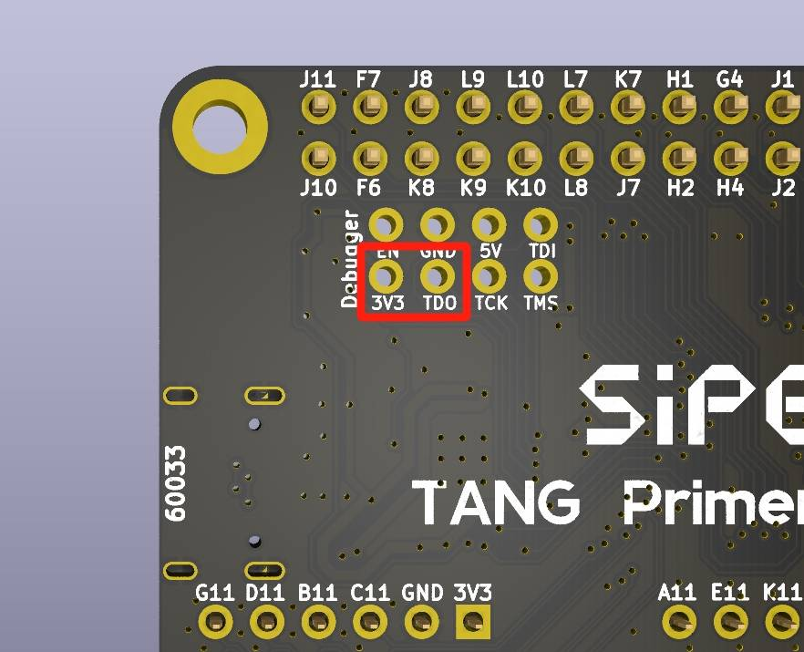
Tang Primer 15K Dock（尚未发布）*TBD*
CSS Indentation 点击此处查看Primer 15K Dock的下载器测试点的位置

Tang MEGA 系列（包含Tang Console）
Tang MEGA NEO Dock（包含 Tang MEGA 138K Dock）
更新按钮位于 PCB 的 TOP 面USB-C连接器下方，丝印标记为 DEBUG-USB2。CSS Indentation 点击此处查看MEGA NEO Dock的下载器测更新按钮的位置
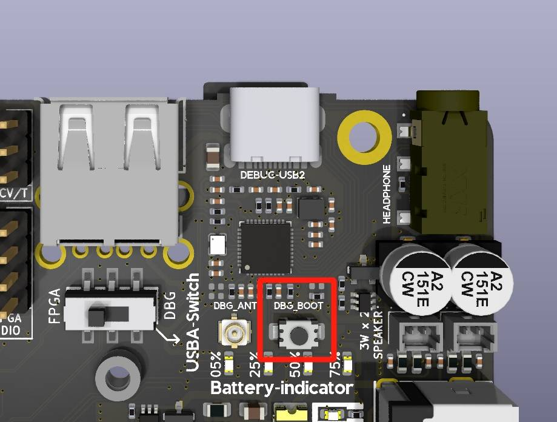
Tang MEGA 138K Pro Dock
更新按钮位于USB-C连接器的左侧，在PCB的 TOP 面标记为 JATG|UART。CSS Indentation 点击此处查看MEGA 138K Pro Dock的下载器更新按钮的位置
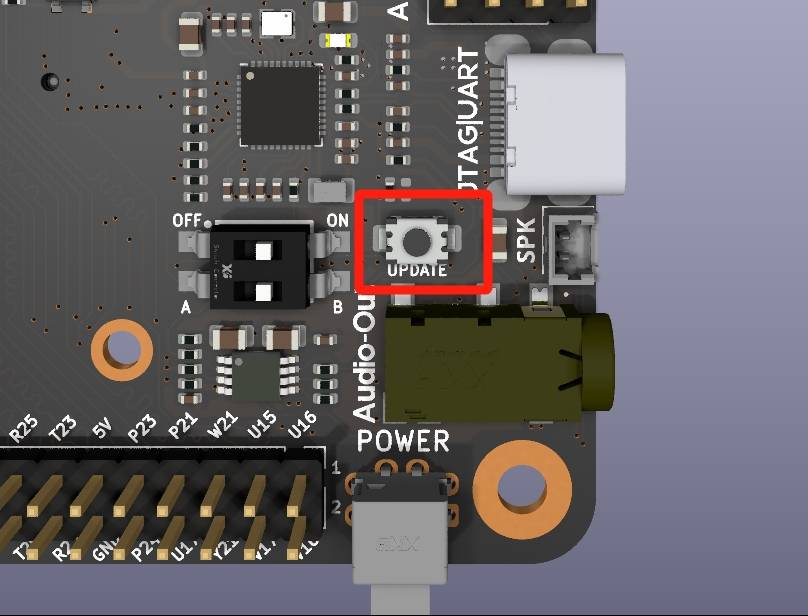
Tang Console
更新按钮位于USB-C连接器的另一侧，在 PCB 的 TOP 面，是两个按钮中较矮的一个，丝印标记为BOOT。CSS Indentation 点击此处查看 Console 的下载器测试点的位置
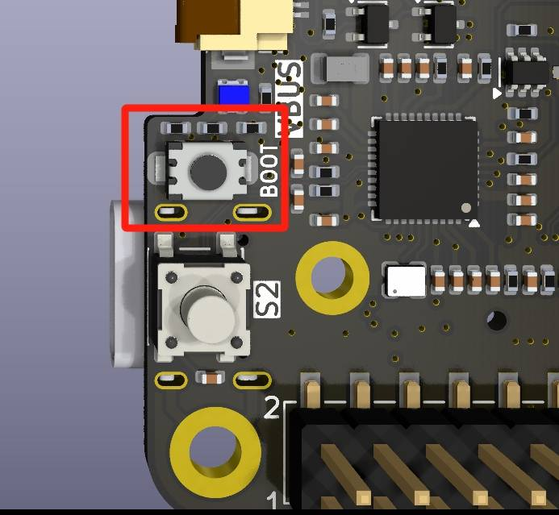
软件准备
首先从 BouffaloLab 官网 下载 BouffaloLabDevCube，最新版本为
1.9.0(2025 年 2 月 10 日)点击查看图片详情
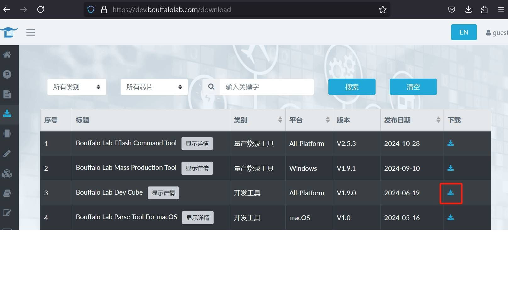
解压下载的内容，并执行相应的可执行文件，在 Windows 下是
BLDevCube.exe点击查看图片详情
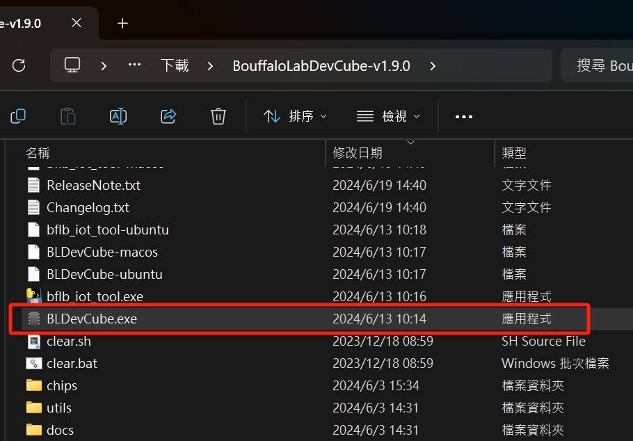
在弹出的窗口中，选择芯片型号为 BL616/618
点击查看图片详情
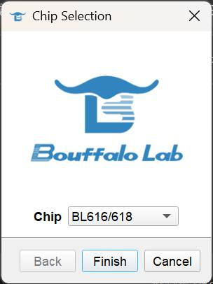
在新窗口中，选中 *Single download option* 下方的
Enable复选框。单击Browse按钮选择要更新的固件档案点击查看图片详情
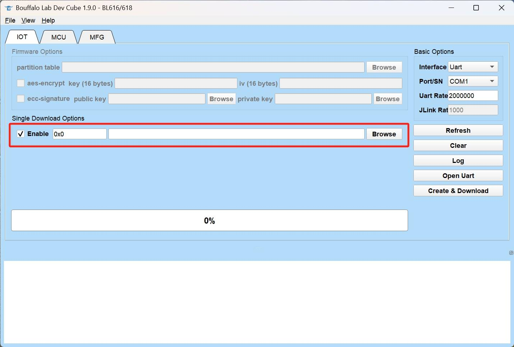
让板载调试器进入 DFU模式，它应该是 BL702 或 BL616 的 CDC-ACM 设备。在 Windows 上这会注册一个新的 COM 端口，在此示例中为
COM12关于如何让板载调试器进入 DFU模式，请参考上一章节【点我跳转】
对于 Linux 用户，CDC-ACM 通常注册为
/dev/ttyACMx对于 macOS 用户，它可能注册为
/dev/tty.usbmodemxxxx或/dev/cu.usbmodemxxxx（每个x代表一位数字）
点击查看图片详情
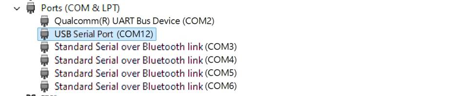
然后设置 BLDevCube，如下所示。设置固件档案位置、DFU 模式的端口，然后单击
Open UART，最后单击Create & Download。点击查看图片详情
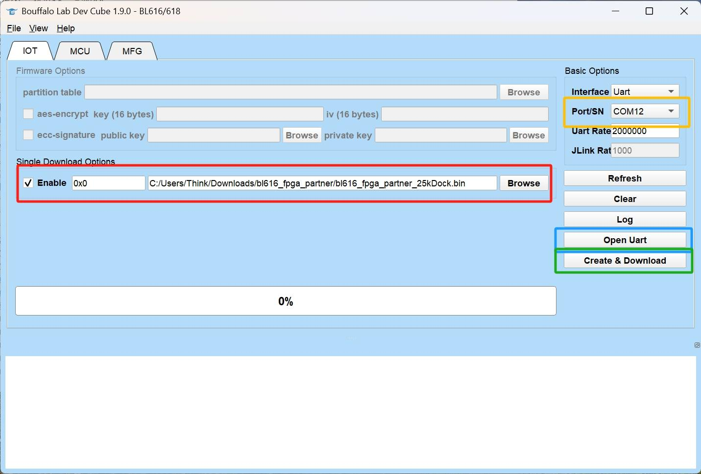
等待下载完成，如下图所示绿色进度条到100%，下方 log 提示
[All Success]即为下载完成点击查看图片详情
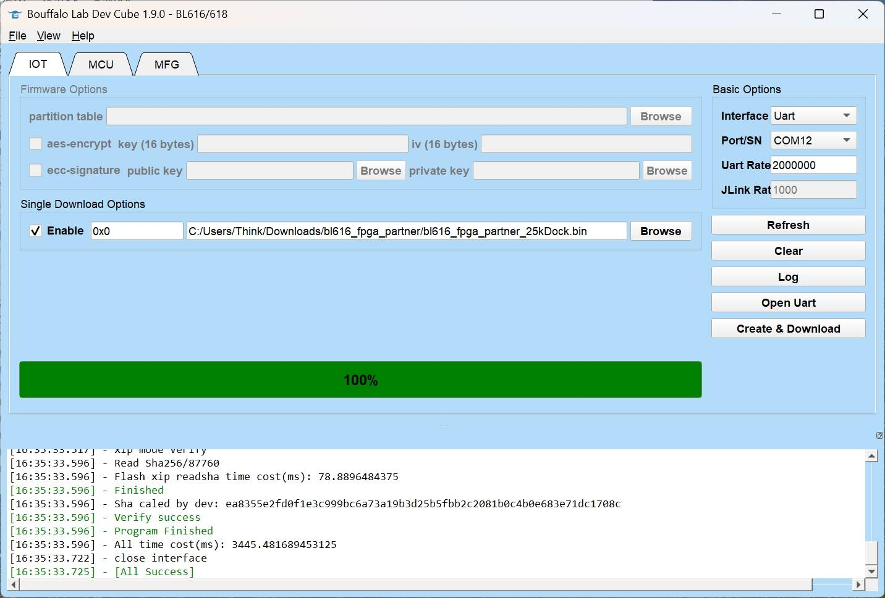
确认结果
完成以上步骤后，我们需要确认板载调试器的固件是否烧录成功。通常重新插拔 USB 线或重新给板子上电即可确认。
在 Windows 中，可以在设备管理器中看到两个新设备：
USB Converter A和USB Converter B。点击查看图片详情
要确认调试器固件版本，请双击任意一个
USB Converter，然后转到“Details”选项卡。然后从下拉菜单中选择父系或上层选项：点击查看图片详情
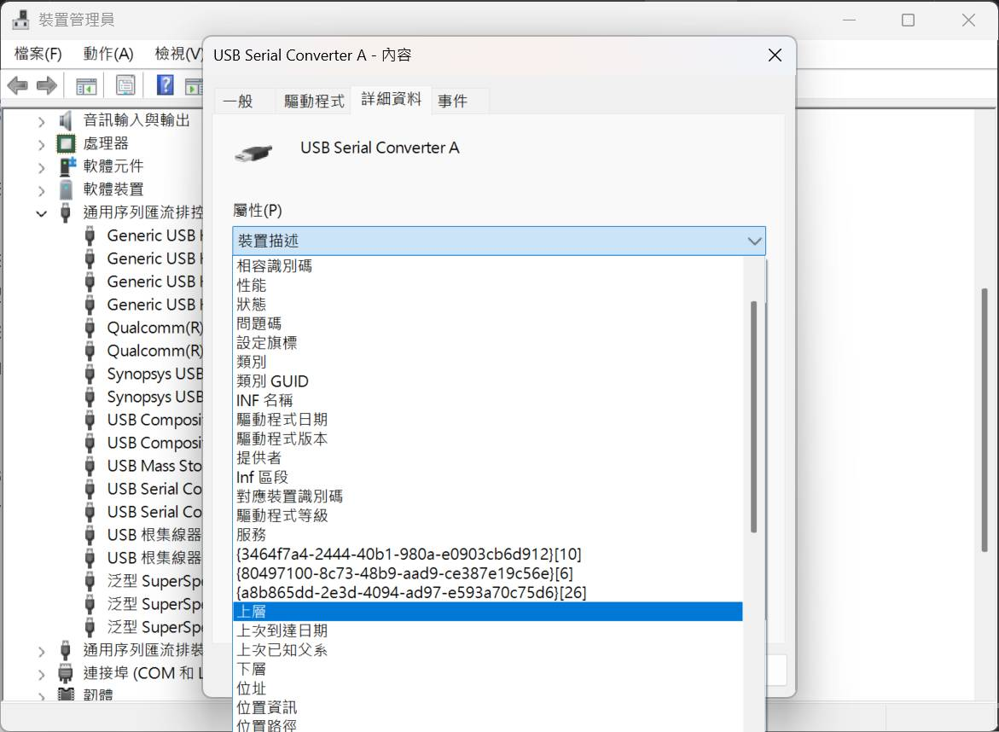
如下图所示，最后 10 位数字
2025102315是调试器固件版本的序列号。 Linux 和 macOS 用户可以使用命令dmesg检查内核日志中的序列号。点击查看图片详情
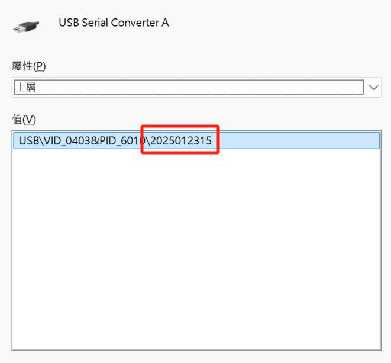
Tang Core 的额外说明
点击查看详情
对于支持Tang Core的开发板而言（如Tang Console），其能正常执行Tang Core功能需要同时依赖调试器固件和二级启动的TangCore firmware for BL616 共计两个固件。
调试器固件可以在本页面下方找到，而二级启动的TangCore firmware for BL616目前由 nand2mario 负责维护，其最新版本可以在TangCore Release Package中找到。
调试器固件写入 flash 的起始地址为 0x0，而TangCore firmware for BL616写入 flash 的地址为 0x40000。
原始的安装文档可以在 这里 找到。
请注意：对于 BL616 而言，只有版本 2025030317 及之后的调试器固件支持二级启动功能。
最新固件
所有Tang系列板载调试器的最新固件序列号记录在这里：
| 开发板型号 | MCU 型号 | 下载链接 | 串号 | SHA256 杂凑/校验 |
|---|---|---|---|---|
| nano 1K | BL702 | N/A | N/A | N/A |
| nano 4K | BL702 | N/A | N/A | N/A |
| Nano 9K | BL702 | N/A | N/A | N/A |
| Primer 20K | BL702 | N/A | N/A | N/A |
| nano 20K | BL616 | 点我 | 2025030317 | bl616_fpga_partner_20kNano.sha256 |
| Primer 25K | BL616 | 点我 | 2025030317 | bl616_fpga_partner_25kDock.sha256 |
| Mega NEO | BL616 | 点我 | 2025030317 | bl616_fpga_partner_NeoDock.sha256 |
| Mega 138K Pro | BL616 | 点我 | 2025030317 | bl616_fpga_partner_138kproDock.sha256 |
| Console | BL616 | 点我 | 2025041420 | bl616_fpga_partner_Console.sha256 |
故障排除
如果您在使用过程中遇到任何问题，或者对文档有任何意见或建议，请随时向我们反馈。联系方式如下。
- 交流论坛: maixhub.com/discussion
- QQ 交流群：834585530
- Telegram : t.me/sipeed
- Reddit : reddit.com/r/GowinFPGA/
- 商业邮箱 : support@sipeed.com
- 直接本页下方留言
在大多数情况下，对于MCU相关的问题 *博流智能* 的官方文档足以进行故障排除。【点击这里】以访问相关文档。
常见问题
更新固件后，未出现 USB Converter A 和 USB Converter B，依旧显示一个 COM 端口
- 可能是BL616 efuse内容异常，请联络售后以获取换货相关的支持。